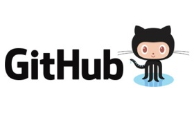

Lawson . Engineer
Nicholaus
Lawson

Computer
Engineer
- Currently
-
Adjunct professor
Tech Lead
Mentor
Senior Engineer - Education
-
MEng UofL
Cert: Network Security
BS UofL -
Sites

Who?
I am a computer engineer, living and working in Louisville, KY. I spend a great deal of time coding and on computers. I am constantly looking for a new project to try out and a reason to use the hotest new dev stack/tool/fancy button. I currently work for a local company (~500 employees, ~100 engineers total, ~20 engineers on my team) that focuses on health care and insurance. I am responsible for leading a team of engineers, working on a large system running millions of transactions a day. I love it, high performance code, well designed system architectures, sql tuning, all of it. It makes me want to get up in the morning and work through the night.
I am also very passionate about system design/achitecture and best practices and standards. Books like Pragmatic Programmer, Software Craftsman, etc resonate with me very deeply. I want to ensure that I produce quality code, for a system that is as good as I can make it at the time, and I want to continually grow so that the next design I make or contribute on will be better than the last.
I am currently teaching as an adjunct professor at a local technical college. I have also particpated in a local code bootcamp that offers free training to qualified applicants to expose them to entire tech stacks to prepare them for junior level work in the develoment field.
I try to keep a blog about random thoughts and some of the projects that I work on. I also have a consulting site up that has some general information about the type of work that I am available to do. On the left, I have links to the major sites, github, linkedIn, etc (more to come). Feel free to reach out to me on any of those sites, ask questions, give feedback, anything at all.
Below are some highlights of the projects that are in on my github site. Detailed documentation for each project (if available) will be on those sites and on my blog page.
Lawson.Engineer
This very site. Now it probably seems a bit excessive to have a simple site hosted in github. But, my ultimate plan is to remake this site (plus or minus some appropriate features) in several different stacks. My next planned adventure will be in angular, so check back in for that.
LawsonCS.com
A sister site! No source code or cool things to share, but LawsonCS is a consulting business that I run on the side.
Blog.LawsonCS.com
My Blog site! Ok, it's just a wordpress site, but still. I am going to blog lots of stuff there, all interesting. Please, visit me, read my ramblings, share my stories, encourage me to do more and better things!
C# Rules Engine
//ToDo: Insert catchy project name here(like RulesRuler, ok no that's dumb). A too be named project whose purpose is clear: be an extensible, c# based, enterprise level rules engine. The idea here is I want to be able to author rules, in C#, and have them dynamically loaded into a library. Once loaded, they will be evaluated as to whether or not the rule is needed to run, and executed if it is needed. It can accept/return any data type, so other than making binary decision (if/else decision tree style) you can also incorporate data manipulation based on some business logic that you expect to change often.
FileTeligence
Intelligent document searching I have a large corpus of pdf/epub files across every tech topic known to man. I constantly wonder, which of these would cover this topic? So, I wrote a small TF/IDF categorization tool to help me search a pre-indexed document corpus and return similar/same files to a search query or supplied file
Typed X12Parser
My very own, fancy X12 parser. Once upon a time, I worked for a company that dealt with healthcare, specifically healthcare data and the X12 EDI format. They had their own proprietary X12 parsers (a few of them) and I was un-impressed with all of them. X12 document format being a highly defined domain specific language, it seemed ripe for a computer professional such as myself to make a better version. Unlike several of the others I have seen, this relies on a single definition for each individual segment, and a c# definition of each file type you want to parse. Once they are defined, the parser populates a POCO representation of the file with various options for validation and standard enforcement. While each segment field is stored as a string, there are extensions for accessing the data as the correct type as well.
Custom Log Library
LoggingLibrary (I spent a long time naming that one). As I have worked at several companies, the way in which errors are handled are always a point of contention. When I ran up against it recently, I endeavored to create my own custom solution that would work for many different use cases, out of the box.
It is built around the idea of Log4Net and has a high degree of interoperability, in fact, it can be used as a drop in replacement. It also supports ideas like Windows Event Logger and Performance Counters, a custom build SQL warehousing option, Splunk, and email. It alleviates the need for logging multiple different ways depending on the type or severity of the error, and exposes simply yet powerful API to solve all your logging needs. Plus, being extensible means you can log to the new hotness in just a few short lines of code!
Sullivan University Courses
Intro to programming with Raptor
During my time at Sullivan University, I post all of my class notes, slides, homework, etc on GitHub so they are available not only to my current students, but to anyone who is interested in the material. It is a hope that I will be able to craft more online content/instructional material for each course so they become a standalone resource for anyone to use (including recorded lectures, and hosted quizzes/exams/hosted homework grading).
Programming Katas (esp Project Euler)
I am a big fan of Code Katas! I think are a ton of fun and can really help give you a reason to try a new language, a new design patter, a new toy, or just hammer away at your coding skills! This is a collection of various problems that I have solved in this arena. I often use these as a basis for code prompts for my students, and when I find new ones, I always take the time to implement the solutions myself, right here. It is a great place to explore some cool and fun code, and many of the solutions are also documented over on my blog!
Below I further detial some of the projects I have completed for various past employers
ZirMed
X12Parser
The company had a need to move of an older platform (known as IBM Universe) and bring all of their work into the .NET world. I was tasked with leading this intiative and designing what the solution would look like. I opted to leverage an X12 parser of my own design instead of relying on various other parsers that had been developed and all but abandoned by other teams. The start of the project saw myself with and our subject matter expert mapping out what the current sysytem did and where other X12 parsers had failed, so we could avoid those pitfalls. After that, I began finalizing the parser and implementing a simple document schema, the 277 claim status response. Once I and the other team member verified the prototype, I brought new team members up to speed and we began to implement the 5010/837P and 5010/837I formats. Much of time after that was spent guiding those engineers, code reveiwing, and monitoring test covarge, as I was splitting my time between this and a new project.
SPLUNK dashboards
As the company adopted SPLUNK as the defacto log repository, it became necessary to report on our error and fatal exception data. The person responsible for administoring the SPLUNK servers was not familiar with the UI, reporting, or query langauge so I began to learn and make material for my team. In the process, I built several dashboards and reports for our QA and engineering team to utilize. Further, I augmented my already existing LogLibrary to also make a web service call to the Splunk forwarding services. This allowed a more organized, strutured message than was available during the original, company-wide implementation. Several other teams struggeled with this and adopted message structures similar to mine in the aftermath. For the months following, I was the source of of training and reference for my team with Splunk.
RulesEngine
I was exposed to a c# based rules engine that was powered, primarily, from Excel spreadsheets that contained the rules themselves, in one of my earlier positions. When I left them and joined a new organization, I got another opportunity to see two more rules engines that were built on top of .NET. Both utilized XML/XPath but in very different ways. Needless to say, XML and XPath are painful to use and newer developers are less likely to have any experience with these technologies. As I began to lead more project designs, I saw a large potential for a powerful, scalable, flexible rules engine based in C#. At the time, Roslyn had been published publicly on GitHub and I began investigating building on top of it. Early results, unfortunately, showed the capabilities were not as fleshed out as it appeared and soon abandoned this for a slightly more traditional approach. By keeping rules in something like a database, they could be combined and built after rule changes, with very little overhead. Thus, my RulesEngine was born and ultimately utilized as a prototype for other teams in the company to build from.
Performance Improvements
I find performance tuning and enhancements to be an overall fun and challenging experience. As I began my last several jobs, I took the opportunity to examine some of the performance bottlenecks as I began to learn the existing systems. As I learned, I would document and make recommendations on improvements. I tend to make these suggestions in two ways 1)in place, with minimal disruption 2)redesign. It can be useful for managers and decisions makers to see both a tactical and strategic solution. These suggestions, combined with performance metrics, help to clarify where code rot is and what the tangible benefits of fixing these can be. In general, I focus on both SQL and .NET code, which has served me well since many junior and mid level developers often create code in both without insight into how it perform or best practices that help make it better. In addition to finding some of the low hanging performance improvements, I also create documentation, and try to organize meetings or lunch and learn opportunities to help developers pick up some new habits and show them pitfalls to avoid.
I also strive to elevate both myself, and my team, to be a center of excellence for best practices, performance, design, and scalability. I routinely find myself being pinged by other teams and pulled into meetings to provide different points of view and help strengthen designs. That is the kind of collaboration that I try to bring teams that I lead, and that is the kind of culture I look for in future prospects.
Training and Continued Education
I believe a good engineer and a good developer should never stop growing and learning. Whether you are writing BASIC on a mainframe server or going fullstack JS and serverless, you need to keep up with the industry and keep your skills up to date. It is easy for new grads to have a wide set of skills in all the latest and greatest, but they are usually missing the experience and seasoning to do great things. Conversely, grizzled veterans may be fast, efficient, and performant on 20 year old tech but have no idea how new developments might make their life and their product even better. While rapid adoption of new tech has to be tempered, especially in high volume or enterprise settings, learning new ways to solve problems make new problems easier to tackle.
With this mindset, I have introduced lunch and learns for the last few companies I have worked for. I have covered a myriad of topics from basic how-tos to in depth tuning. These events have always been well received by managers, devs, and qas, it is pretty common to even attract members from other teams. It can be difficult to get coworkers to buy in to actually doing the presenting, and I often find myself covering for some last minute with a pre-made slide deck, but I find the experience to be invaluable.
This drive has also led me to teach part time at the college level and at code bootcamps. I have covered several courses from basic intro to programming, to language intro, and framework intros.
LawsonCS.com - Professional site for a consulting side business
Blog - Personal blog